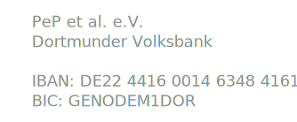

Archiv
Alle unsere Posts in anti-chronologischer Reihenfolge

Sommerakademie 2016
Anmelden!
Das diesjährige Oberthema ist
Der Mars(ianer)
Überleben auf und Wissenschaft vom Mars
Weitere Informationen gibt es hier.
Sommerakademie 2016
Wir veranstalten erneut eine Sommerakademie in den Österreichischen Alpen.
Los geht es am Samstag Abend des 20. August. Zurück fahren wir eine Woche später am Sonntag, dem 28. August, so dass wir Abends wieder in Dortmund sind.
Das diesjährige Oberthema ist
Der Mars(ianer)
Überleben auf und Wissenschaft vom Mars
Der Teilnehmerbeitrag liegt bei 100€ (260€) pro Studierendem (Alumni - bei Eigenanreise reduziert sich der Betrag auf 160€) inkl. Anreise im Bus und Vollpension.
Im Vorfeld wird es ein Organisationstreffen geben.
Der Termin steht noch nicht fest, wird aber rechtzeitig bekanntgegeben.
Das komplette Plakat.
{kind=link}
Zum Anmeldeformular geht es hier.
Homepage der Unterkunft
Für weitere Fragen stehen Euch Alex Birnkraut, Henning Moldenhauer und Vanessa Müller zur Verfügung.
Ihr könnt auch eine Email schreiben.
Absolventenfeier 2015
Die Bilder der Absolventenfeier sind ab heute hier verfügbar.
Zugangsdaten: absolvent:geschafft2015
Jahresbericht 2015
Mit der erfolgreichen Absolventenfeier am letzten Wochenende geht das “PeP-Jahr” 2015 nun zu Ende. Mit unserem Jahresbericht wollen wir einen Einblick in unsere Aktivitäten im Jahr 2015 geben. Wer unsere Aktionen aktiv unterstützen will, ist herzlich zum Mitmachen eingeladen und kann gerne bei unseren Sitzungen jeden Mittwoch Abend mitwirken. Meldet euch dazu bei Henning , Alex oder Vanessa.
Wir verbinden den Bericht ebenfalls mit dem Aufruf den Jahresbeitrag von 10,– EUR auf das Vereinskonto zu überweisen, oder noch besser einen Dauerauftrag einzurichten.

Wem unsere Arbeit gefällt, der ist herzlich eingeladen einen Förderbeitrag von 25,– bzw. 50,– EUR beizutragen.
Vielen Dank!
Henning Moldenhauer Alex Birnkraut Vanessa Müller
Hier nun der Jahresbericht.
Absolventenfeier 2015
Die Absolventenfeier für den Abschlussjahrgang 2015 findet am 06. Februar 2016 im Audimax statt.
Los geht’s um 16:00 Uhr.
Hier geht’s zum Programm.
Die Anmeldung erfolgt hier.
Bachelorkolloquium 2015
Es geht wieder los!
Das Bachelorkolloquium startet in eine neue Runde!
Den Anfang macht am 05.11.2015 Sascha Dungs, er wird seine Bachelorarbeit mit dem Titel „Aufbau und Charakterisierung eines Messplatzes für temperaturabhängige Messungen von ATLAS Pixelsensoren“, geschrieben bei E4, vorstellen!
Alle Interessenten sind herzlich eingeladen!
Infos über die Termine und Themen findet ihr hier.
Bachelorkolloquium 2015 - Das Programm
Wintersemester 15/16
Termin: Donnerstags, 10:15 - 11:00
Ort: AV-Raum (P2-E0-414)
05.11.2015 Sascha Dungs
“Aufbau und Charakterisierung eines Messplatzes für temperaturabhängige Messungen von ATLAS Pixelsensoren”
E4, Herr Klingenberg
19.11.2015 Alicia Fattorini
“Untersuchungen zur Zerfallsverteilung von -Mesonen im Zerfallskanal
am LHCb-Experiment”
E5, Herr Spaan
03.12.2015 Stefan Bissmann
“Helizitätsamplituden und deren Symmetrien in ”
T4, Frau Hiller
17.12.2015 Marie Fehrmann
“Einfluss von Osmolyten auf das druckabhängige Phasenverhalten hochkonzentrierter Proteinlösungen”
E1, Herr Tolan
________Weihnachtsferien________
14.01.2016 Carolin Ratering
“Verlustleistung von bestrahlten n+-in-n Siliziumstrukturen”
E4, Herr Klingenberg
21.01.2016 Felix Meier
“Mathematische Grundlagen zur Allgemeinen Relativitätstheorie”
T3, Herr Päs
28.01.2016 Johannes Heuel
“A study of the decay ”
E5, Herr Albrecht
04.02.2016 Gary Ferkinghoff
“Ising-Antiferromagnet in zwei Dimensionen mit konkurrierenden Wechselwirkung”
T1, Herr Stolze
11.02.2016 Boris Sawadski
“Konstruktion einer neuen Spiegelkammer und Optimierung der Laserführung für die Kurzpulsquelle bei DELTA”
DELTA, Herr Kahn
PeP Info-Café
Am Mittwoch den 21.10.2015 findet das erste Info-Café organisiert von PeP et al. im Raum P2-O1-513 statt. Von 12:00 bis ca. 14:00 werden Marie Schmitz und Carl-Arne Thomann Fragen rund ums Studium und PeP et al. beantworten. Alle Physikstudierenden sind herzlich eingeladen!
Festkolloquium
Am Dienstag den 20.10.2015 findet anlässlich des zehnjährigen Bestehens von PeP et al. ein Festkolloquium in HG2 HS2 um 16:30 statt. PeP et al. konnte mit Herrn Dr. Reinhold Ewald einen besonderen Gastredner für das Kolloquium gewinnen. Er ist unter anderem seit 1999 Astronaut der ESA und hat drei Wochen auf der MIR im All verbracht.
Mehr Informationen unter:
Physik TU Dortmund - Festkolloquium
Wir würden uns sehr über zahlreiches Erscheinen freuen!
Bachelorkolloquium 2015
Liebe Physiker, (-Innen, MedPhys, Lehrämtler natürlich IMMER eingeschlossen!)
Auch im kommendem Wintersemester wollen wir das altbewährte Bachelor-Kolloquium wieder aufleben lassen. Dabei stellen Bachelor-Absolventen unterer Semester ihre Bachelorarbeit in einem weniger formellen Rahmen vor.
Dieses Angebot richtet sich hauptsächlich an Fünftsemester, die sich bald selbst für ein Bachelorarbeitsthema entscheiden müssen. Dritties oder Erstis sind natürlich auch sehr herzlich eingeladen, sich schonmal über verschiedene Arbeitsgebiete der Lehrstühle und Bachelor-Themen zu informieren!
Das Bachelor-Kolloquium wird ab dem 5. November jeden zweiten Donnerstag von 10:15 bis ca. 11:15 Uhr im AV-Raum unter Anwesenheit von Keksen stattfinden. Wir suchen noch Vortragende! Wenn ihr also Lust habt euch zu beteiligen, meldet euch einfach bei Janine, auch bei anderen Fragen oder Anregungen.
Mehr Informationen und Programm unter Bachelorkolloquium
PeP et al. Stipendien 2015
Vom 15. August 2015 bis zum 15. September 2015 können sich Studierende der (Medizin-)Physik aus Dortmund für die aktuelle Runde der Deutschland-Stipendien von PeP et al. bewerben.
Das von der Bundesregierung unterstützte Programm wird zur einen Hälfte durch Vereinsmittel und zur Anderen durch Gelder aus dem Bundeshaushalt ermöglicht.
Mehr Informationen unter: Stipendien
Neuer Vorstand
Auf der Mitgliederversammlung wurde ein neuer Vorstand gewählt.
In der Geschäftsführung sind nun Henning Moldenhauer als erster Vorsitzender, Alex Birnkraut als zweiter Vorsitzender und Vanessa Müller als Finanzreferentin.
Im Newsletter stellt sich der neue Vorstand vor.
Neben der Geschäftsführung wurden auch die Positionen für folgende Projektbeauftragte belegt:
- Geschäftsführung
- Mitgliederbetreuung
- Ressourcenverwaltung
- Begabtenförderung
- Fortbildungsprojekte
- Öffentlichkeitsarbeit
- Alumni-Arbeit
- Organisation der Sommerakademie
Genaueres ist dem Protokoll der Mitgliederversammlung zu entnehmen.